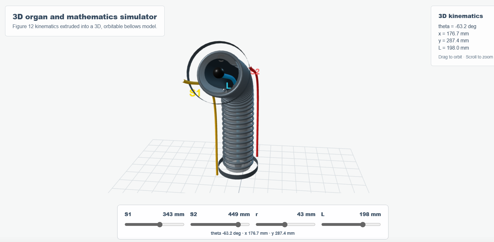
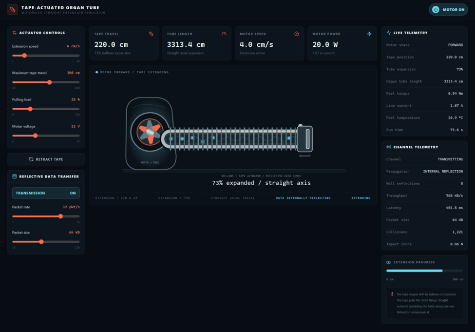

Our project contains two simulation:
Adjustable Parameters
Mathematical Model
The simulator calculates four equations:
𝐿=𝑆1 + 𝑆2
4r𝑡𝑎𝑛(θ/2)=𝑆1−𝑆2
𝑥=−𝐿 𝑠𝑖𝑛(θ)
𝑦 = 𝐿 + 𝐿𝑐𝑜𝑠(θ)
where θ is the bending angle, and (x, y) is the calculated endpoint position.
3D Model

We also built another simulator, which demonstrates a motorized tape measure controlling a collapsible organ tube.
